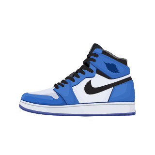

关于课程

We all make choices, but in the end our choices make us.
明确人生方向
大一：打牢基础。脚踏实地学好基础课程，偏向学习计算机科学与技术这一专业。坚持每一天记英语单词、每一天早上读英语，每一天坚持听英语。
大二：在这一年里，既要稳抓基础，又要做好由基础课向专业课过渡的准备，并要把一些重要的高年级课程逐一浏览，以便向大三平稳过渡。课余时间自学各类语言。可参加有益的社会实践，如下乡、义工活动，同时进入科研组实习，增加科研经验。
大三：主动加深专业课程的学习，大三下学期结合自己所学到的专业知识以及市场状况开始规划确定自己将来的去向，着手了解科研的相关方面。
大四：写好毕业论文。进入总结阶段，重点任务是准备深造，大四意味着大学即将结束，但也意味着新的征程即将开始。总结自己的大学阶段，看看哪些事情在规划内，却没有做到，努力分析原因，为自己的大学生涯字做一个总结。
关于就业
Nothing is impossible, the word itself says I'm possible.
实现人生价值
分析家庭条件大概率会投身互联网行业，在行业更新换代如此快的时代，尽可能多渠道地了解行业现状与前景，不要忽略学习的重要性，坚持学习。要积极参加职业培训，让自己在职场上永不落伍，争取做行业领头羊。坚持锻炼。身体是革命的本钱，所以锻炼也不能偷懒。要在工作之余多做些有利身心的运动。周末也要和朋友去参加一些有益身心的事，例如爬山等。打理人际关系，人际关系不容忽视，学会与人打交道，往高处走。明确自己未来的人生定位，用心参加招聘活动，在实践中检验自己的积累和准备，预习或模拟面试，强化求职技巧。检验自己的知识技能，提高自己的职责感，主动性和受挫潜力。同时不忘多陪陪父母，实现个人的价值，找到人生的意义。